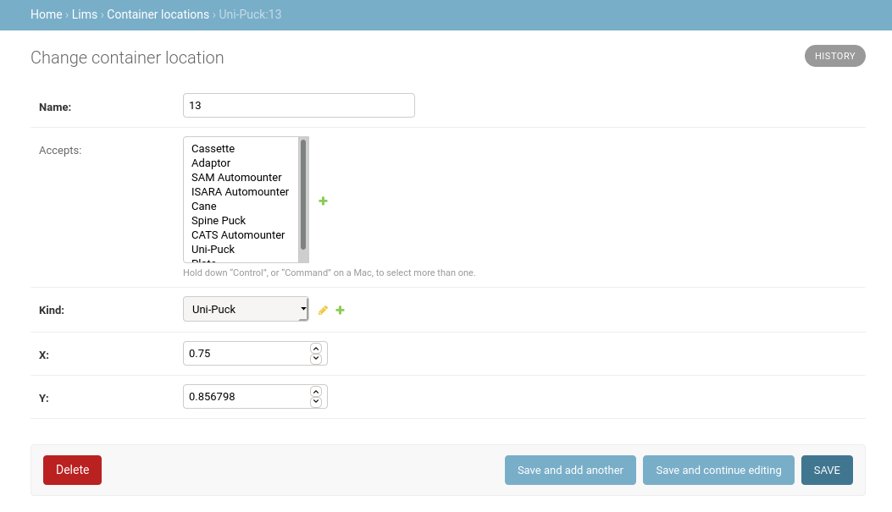

Container Types¶
MxLIVE includes, by default, the following automounters and container types:
Automounters:
ISARA accepts up to 29 Uni-Pucks
SAM accepts up to three Cassettes or Adaptors, which can accept up to four Uni-Pucks
CATS accepts up to nine Spine Pucks in main region and up to eight Plates in bottom row
Sample Holders: Cane, Uni-Puck, SSRL Cassette, Spine Puck, Plate
Creating New Container Types¶
To add a new automounter or sample holder, create a new Container Type entry from the MxLIVE Django administration site. The Envelope can be rect or circle and is used to represent the shape of the container layout. The Layout is a JSON dictionary providing a radius for circles representing locations in the container, and a height to define the aspect ratio of rectangular envelopes, assuming a width of 1.

A Container Location should be created for every location in the new container type. The name should be kept to a few characters. If this container type is meant to hold other container types, select the types of containers accepted at this location. If this container is a sample holder, do not select any accepted containers.
To display the container layout, choose the container type, and assign x and y coordinates. For rectangular envelopes, x and y should be between 0 and 1, with (0, 0) being the top left corner, and (1, 1) the bottom right. If the container type has a circular envelope, treat x and y as polar coordinates, radius r (between 0 and 1) and angle \({\theta}\) (between \({\pi}\) and \({-\pi}\)) respectively.